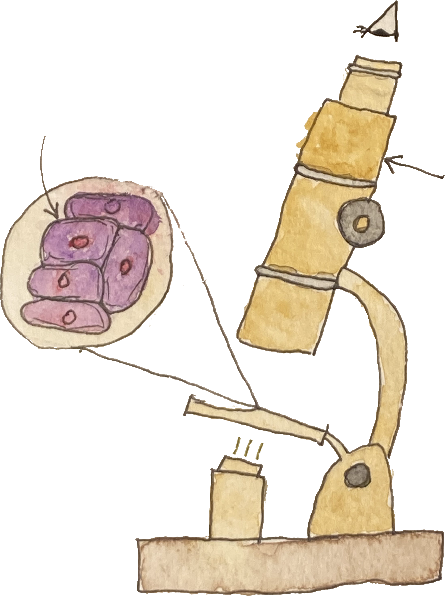
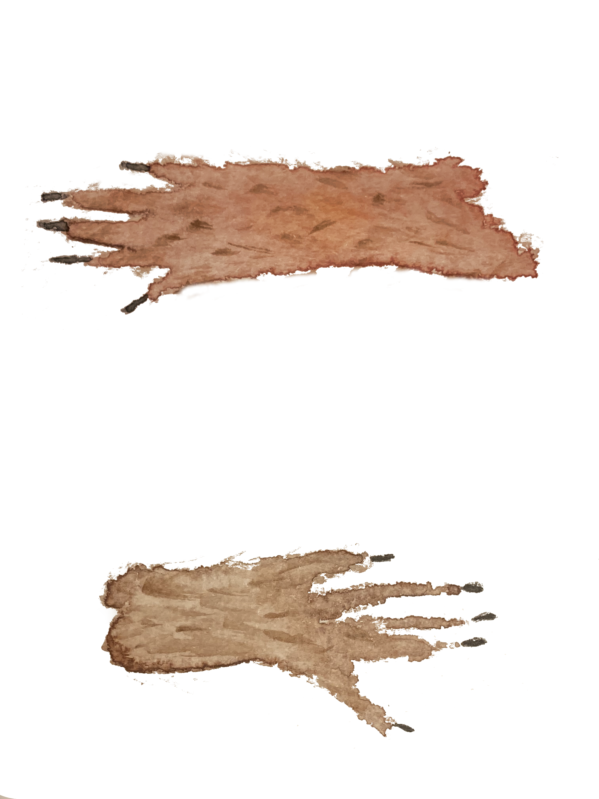

The Tale of Julie Browntail Painting Gallery
Here's the full ebook if you just want to see that. Click here to go back to the main page about this picture book.

No. 1. The front cover. I painting this one about a year ago. That was when I found my interest in painting squirrels. Without this painting, I would not have made this book at all. For that reason, I have placed it on the book's cover.

No. 2. I tried to have her leaning with her head on her paws but it didn't come out quite right.

No. 3. This was the first one I made specifically for the book and I realized I had spent too much time on it. I lowered the level of detail for all the others.

No. 4. Julie's brother is not going to make the leap.

No. 5. Miss Rufa is teaching anatomy from a diagram inspired by Da Vinci's Vitruvian Man.

No. 6. I did not describe the marrow and cartilage in the text, but it didn't hurt to include them. Most children have probably at least heard them mentioned.

No. 7. Out the window is a tire swing hanging from a branch with a young squirrel in it.
No. 8. Based on some old microscopes I saw in a stockroom at my university.

No. 9. The lines around the cell are the collagen fibers that osteoblasts secrete into the bone matrix.
No. 10. The colors aren't as different on a screen as they seemed on the paper.

No. 11. The letter represents a molecule of testosterone, which can cross the plasma membrane because it is nonpolar.

No. 12. I love this one so much. He's supposed to be wearing a sweatband.

No. 13. Cellular beaver was a lot of fun to draw.

No. 14. This is my favorite painting. He is wearing a birthday party hat because testosterone is causing him to live longer.

No. 15. Cellular beaver is taking some hard-earned rest on a beach.

No. 16. I think the closed eye turned out well. The glasses felt necessary because they are part of Grandpa Browntail's visual identity.

No. 17. I thought bringing the story back around to the pinecone was a nice touch.